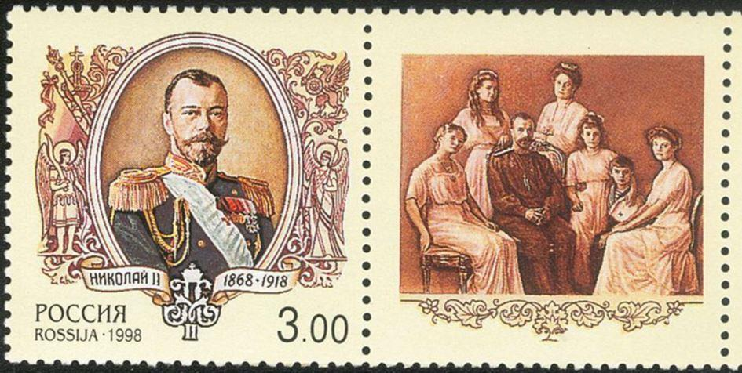
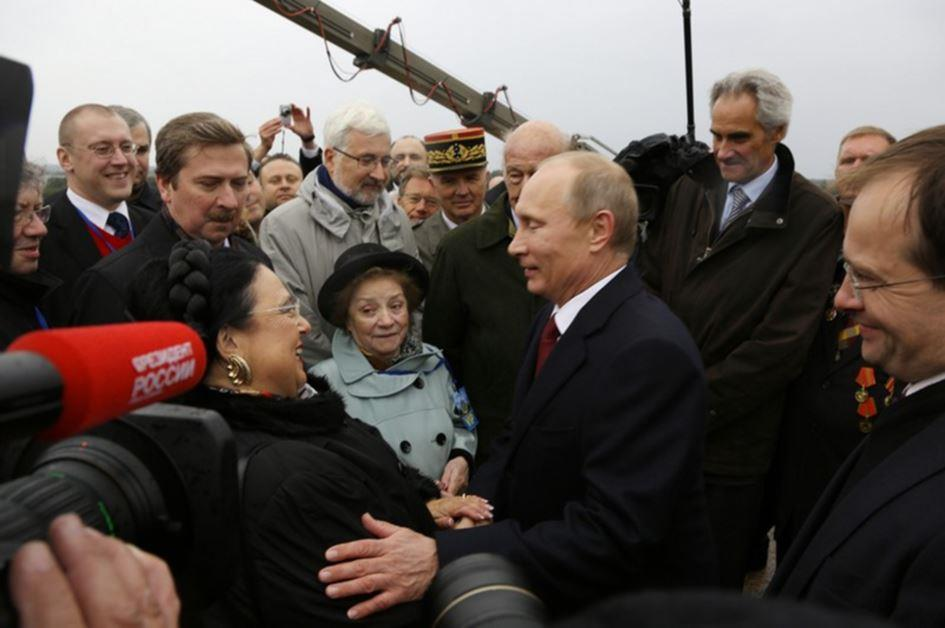
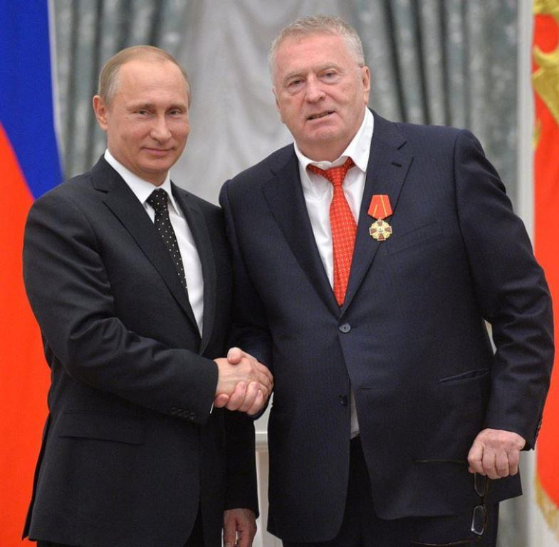
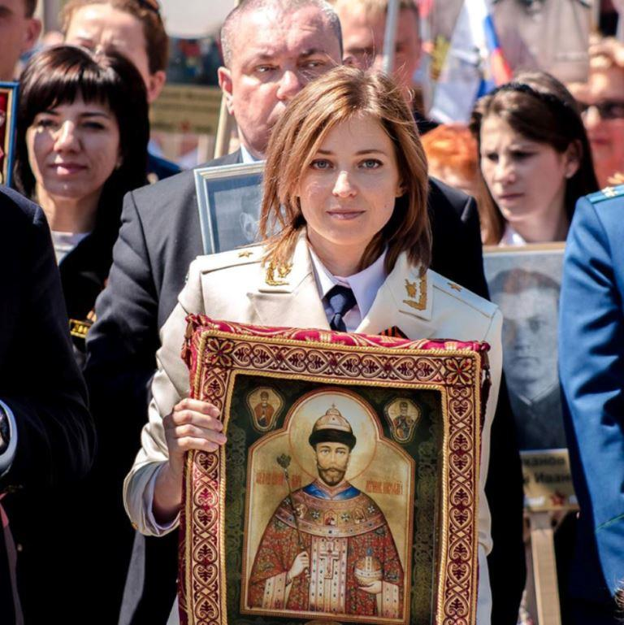
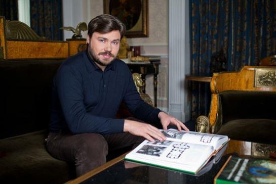
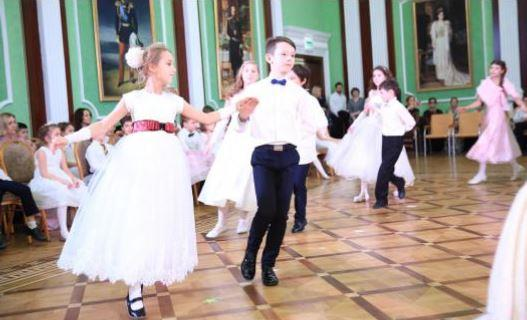
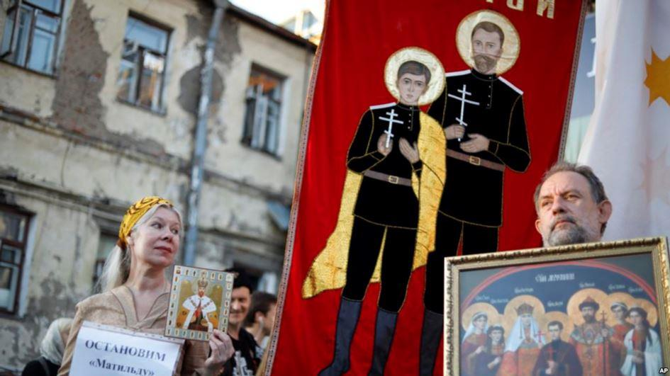
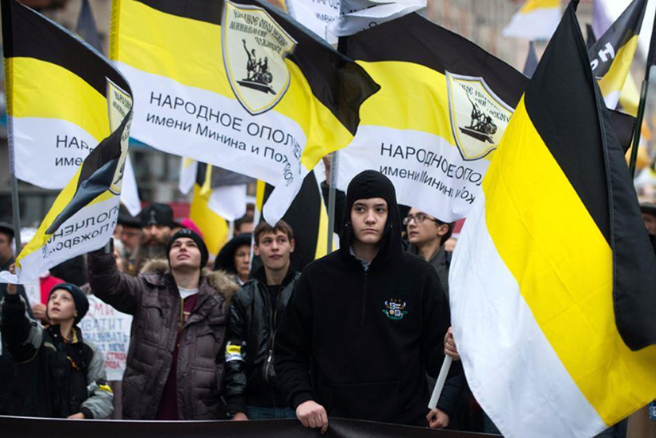
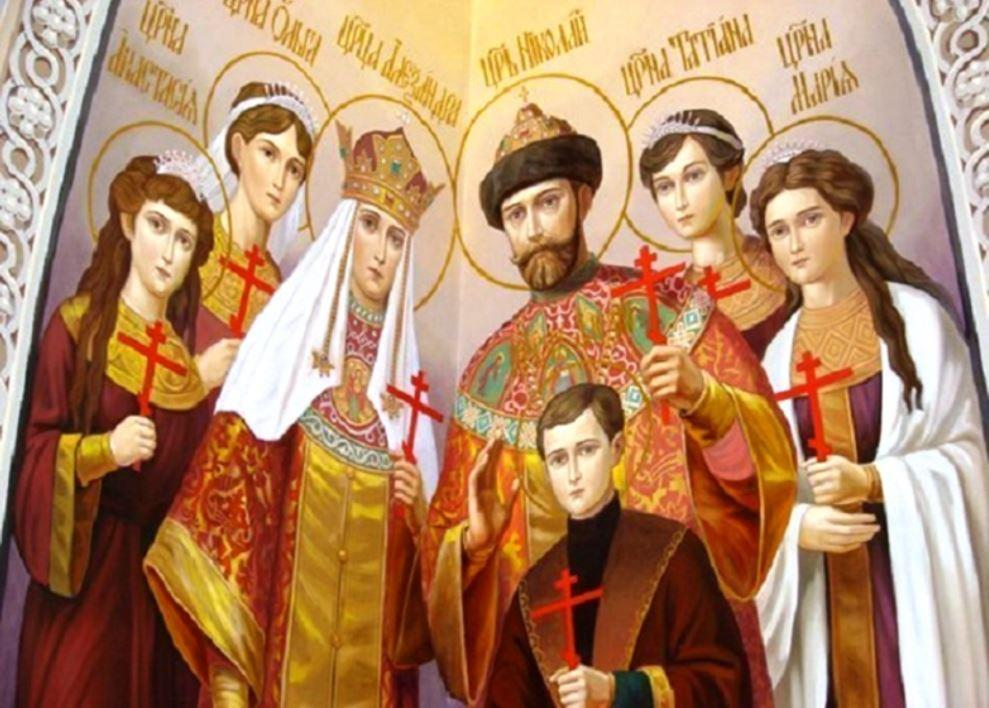

À la veille de l’élection présidentielle, quel est le vote des monarchistes russes ?
Alors que vient de s’achever le 100ème anniversaire de la chute de Nicolas II et ceux des révolutions de Février et d’Octobre 1917, célébrés en toutes discrétions par le gouvernement, les russes s’apprêtent à aller voter le 18 mars prochain pour désigner un successeur à Vladimir Vladimirovitch Poutine. Quel sera donc le vote des monarchistes pour cette élection d’ores et déjà dénoncée par les médias occidentaux comme « jouée d’avance ».
Avec plus de 28 % des russes (soit 1 russe sur 3 parmi lesquels 33 % des jeunes russes âgés de 18 à 24 ans) qui souhaiteraient la restauration de la monarchie, le vote des partisans des Romanov est loin d’être ignoré par le Kremlin qui a multiplié ces dernières années des gestes en leur faveur. Inaugurations de statues à l’effigie des membres de la famille impériale largement réhabilitée depuis la chute du communisme en 1991, expositions en tout genre sur les Romanov dont les corps exilés ont été rapatriés sur ordre de Moscou, timbres sur lesquels figurent désormais les portraits du Tsar martyrisé Nicolas II et de sa famille, le président Vladimir Poutine n’a cessé de courtiser la flamme et la fibre nationaliste d’un mouvement divisé mais qui bénéficie d’un soutien de l’église orthodoxe, de divers parlementaires et proches du président russe (et ancien premier ministre) qui dirige la Fédération de Russie depuis 1999, de manière quasi ininterrompue.

La Grande-duchesse Maria Vladimirovna Romanov et Vladimir Poutine
Soutenu actuellement par les partis « Russie Unie », Rodina et Plateforme Civique, Vladmir Poutine a devant lui d’autres candidats déclarés qui sont tout aussi capables que lui de capter le vote incertain des monarchistes.
A commencer par le tonitruant Vladimir Volfovitch Jirinovski, leader du parti Liberal-démocrate de Russie qui a lui-même fait plusieurs appels du pied aux monarchistes. Avec un programme qui réclame le retour à l’état fort et vante les mérites d’un expansionnisme militaire, fort de 56 sièges à la Douma (sur 478), Jirinovski a déposé un projet de loi, l’été dernier, réclamant l’adoption de l’ancien hymne impérial, « Dieu sauve le Tsar ! » comme nouvel hymne national et qu’il avait justifié ainsi : "Bien que l'actuel hymne national soit profondément respecté par beaucoup de russes, l'hymne impérial reste encore une fierté pour un grand nombre d'entre nous autant que c'est un symbole de la grande histoire de notre pays. Pour le LDPR, l'adoption d'un nouvel hymne serait le symbole d'une continuité historique qui honorerait et commémorerait plus de 1000 ans d'histoire du pays, que ce soit le « régime monarchique ou le régime soviétique ».
Comme il permettrait de « renforcer la position de la Russie sur l'échiquier international ». Ce n’est pas la première fois que cet ancien fonctionnaire du KGB affirme ses sympathies monarchistes. En 2015, il avait solennellement appelé ceux-ci à être plus actifs en politique et affirmait à qui voulait l’entendre qu’en cas de victoire, il songeait à un modèle de monarchie élective sur 10 ans.
Vladimir Poutine bénéficie pourtant d’un atout indéniable et de charme. La députée Natalia Vladimirovna Poklonskaya, ancienne procureure de Crimée (2012-2014) est considérée comme la pasionaria des monarchistes russes. Profondément attachée à la mémoire du Tsar Nicolas II dont elle garde un portrait dans son bureau, elle particulièrement active au sein de la mouvance monarchiste. Partisan d’une monarchie autocratique, elle a tenté plus d’une fois à faire interdire le film « Mathilda » (le gouvernement se gardant bien de se mêler de cette polémique) comme participé à des manifestations contre une œuvre jugée hérétique par bon nombres d’ultranationalistes monarchistes radicalisés.

La députée Natalia Vladimirovna Poklonskaya
Prenant la tête d’une manifestation qui a rassemblé plus de 60000 personnes en juillet dernier, elle a fait les unes des médias russes, portant dans ses mains une icône du tsar béatifié par l’église orthodoxe en 2000. Même en Crimée ou dans le Donbass, où l’on retrouve des unités paramilitaires monarchistes actives, le gouvernement ne cache pas son adhésion à la restauration de la monarchie. En 2014, le premier ministre Sergueï Aksionov n’avait-il pas déclaré « Quand il n’y a pas d’unité de commandement, l’irresponsabilité collective surgit […] Aujourd’hui, à mon avis, la Russie a besoin d’une monarchie. »
« Quoique minoritaire, le courant monarchiste se développe en Russie » dixit un article du Monde daté du 4 juin 2017 qui tentait de se faire prophète sur la question. Et notamment parmi les officines gouvernementales jusqu’au plus haut sommet. Parmi les proches du président Poutine, ouvertement sensible à l’idée monarchiste on trouve Alexandre Douguine et l’oligarque Konstantin Malofeev.
Ce dernier, proche de l’ancien député Philippe de Villiers, a ouvert une école à une vingtaine de kilomètres de Moscou, Saint-Basile-le-Grand, où l’on vous accueille dans la plus grande tradition des anciennes écoles impériales. Le fronton de l’école ne fait pas mystère de son enseignement. Dans ses couloirs, les portraits des tsars de Russie qui ont régné depuis 1613 et en haut de son mat, les anciennes couleurs de l’empire défunt. Ici on forme une future élire de fonctionnaires qui seront prêts à agir quand la monarchie sera restaurée dans le respect de la foi orthodoxe. Patriotisme et religion, les deux mamelles du gouvernement de Vladimir Poutine qui en a fait un crédo auquel sont très sensibles les monarchistes comme les membres de la famille impériale qui ont plus d’une fois annoncé dans la presse soutenir les actions d’un homme que certains partisans d’un nouveau Zemski Sobor (Congrès de la Terre russe) verraient bien occuper un trône.

Etude de la dance à l'école Saint-Basile-le-Grand à Moscou. Photo: Andrey Kordelyanu
Théoricien d’un Eurasisme dépoussiéré distillé en son temps par le prince Nikolaï Sergueïevitch Troubetzkoï, Alexandre Douguine fascine autant qu’il divise. Ce conseiller de Vladimir Poutine à la longue barbe poivre et sel ressemble à ces russes fantasmés par l’occident. A la fois mystérieux et doté d’une profonde croyance, si l’homme affirme sans ambages que le président russe a « suivi pratiquement toutes ses propositions politiques », il n’en demeure pas moins parfois critique à l’égard de son régime.
Ce fils d’un ancien officier du KGB, corps militaire auquel a longtemps appartenu Poutine, a aussi participé à la création du Parti national Bolchevique qui comme son nom ne l’indique pas, est issu de la mouvance d’extrême-droite russe. Intellectuel reconnu, il est aussi considéré comme l’idéologue du gouvernement russe actuel (quoiqu’il s’en défende) et le « Raspoutine » du Kremlin par l’opposition. L’idée eurasiste avait fait chemin au début du XXème siècle et avait même gagné les monarchistes russes en exil dont une partie avait tenté en vain de faire une synthèse entre monarchisme et communisme (les Mladorossis). Loin d’avoir été abandonnée, l’eurasisme a de nouveau gagné la sphère monarchiste actuelle convaincue que la « Grande Russie » prendra la tête des nations libres face au choc des civilisations qui se prépare. Face à ce danger, porté par les États-Unis selon lui, et devant l’européanisation de la société russe, Douguine reste convaincu que l’idée monarchique peut-être un rempart solide aux fondations à venir d’une nouvelle Russie, cette Novorossiia qu’il appelle de ses vœux. En mars 2017, il déclarait d’ailleurs que « la monarchie (était) la forme optimale de gouvernement pour la Russie. Mais que celle-ci ne pourrait être restaurée que dans le contexte d'une révolution conservatrice globale ». Ajoutant toutefois que « la Russie n’allait pas encore dans ce sens aujourd’hui ! ». Des déclarations qu’il avait déjà tenu à diverses reprises sur la chaîne de télévision en ligne « Tsargrad »… propriété de Konstantin Malofeev.
L’église orthodoxe, qui récupéré son influence après la chute du communisme, est un pourvoyeur indéniable de vote pour le régime actuel. Pour les tsaristes, la religion est indissociable de l’idéologie monarchiste. Proche du Président Vladimir Poutine, l’évêque Tikhon Egoryevsky avait déclaré au plus fort de la commémoration de la mort du Tsar Nicolas II et de sa famille à Iekaterinbourg, que « le système monarchique avait une place particulière en Russie » mais que « celui-ci restait fortement idéalisé par les russes », essayant tant bien que mal de mettre fin aux divisions qui agitaient alors l’épiscopat orthodoxe dont une partie du clergé s’était prononcée en faveur d’un colloque immédiat sur la question du retour de la monarchie.
Quid des autres potentiels candidats. L’opposant Alexeï Navalny, autoproclamé opposant numéro 1 par les médias occidentaux alors qu’il n’est que réellement 6ème sur une longue liste où figure encore en bonne place le parti communiste de Guennadi Ziouganov, n’a pas les faveurs des monarchistes qui se méfient de ce « politicien au curriculum vitae loin de tout principe démocrate », les autres candidats ne semblent pas faire le poids face à Vladimir Poutine. Si l’ancien député Anton Bakov, leader d’un parti monarchique, s’est retiré de la course à la présidentielle dans ce qui ressemble désormais à une vaste plaisanterie, affirmant s’occuper de la proclamation d’un empire russe en terre ouest-africaine, les regards se tournent vers la journaliste Ksenia Anatolievna Sobtchak, ancien soutien au président russe et fille de l’ancien maire de Saint-Pétersbourg, connu pour ses convictions monarchistes. A la chute de l’union soviétique, il avait permis à l’ancien prétendant Vladimir III Kirillovitch de revenir en Russie accueilli par 50000 russes. Connue également pour avoir fait la une de « Play Boy », elle ne fait pas non plus l’unanimité parmi l’opposition russe qui voit en elle, une énième poupée pré-fabriquée des réseaux poutinistes à laquelle serait susceptible d’adhérer les monarchistes qui reporteraient leurs votes sur le leader russe lors d’un éventuel second tour, affirme le professeur Sergey Gladyshev dans le magazine Versia.
Mais si le porte-parole du Kremlin, Dmitry Sergeyevich Peskov a temporisé plus d’une fois sur le prétendu monarchisme latent de Vladimir Poutine, dont les médias russes se font fréquemment les choux-gras, l’intéressé a lui-même tenu a rappelé que la « restauration de la monarchie n’était pas encore sur son agenda » lors d’une interview accordée au producteur Oliver Stone et dont un projet en ce sens avait été pourtant initié lors de la présidence de son prédécesseur, Boris Eltsine. De quoi alimenter toutes les hypothèses possibles quant au vote des monarchistes russes en faveur de Vladimir Poutine et qui attendent encore beaucoup de ce fameux statut que la famille impériale des Romanov négocie toujours avec le Kremlin. Et dont les deux têtes, la Grande-duchesse Maria Romanov et le prince André Romanov, se disputent plus que jamais les faveurs du leader de Russie Unie.
Partager cette page